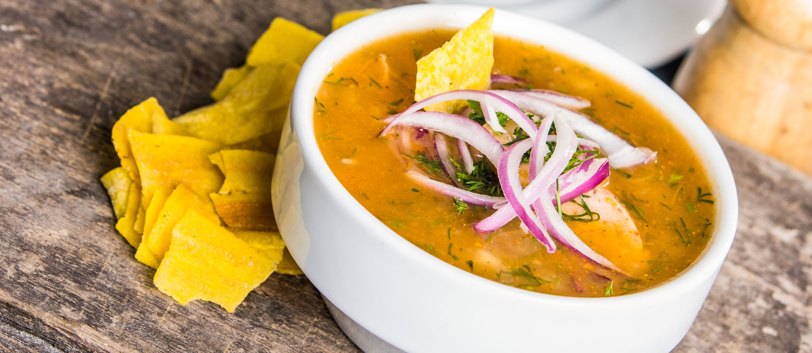

Ecuadorian tuna fish soup (Encebollado de pescado)

Description
Encebollado de pescado is an Ecuadorian fish soup made with fresh
tuna, yuca or cassava, tomato, onions, cilantro, cumin, hot pepper
and topped with pickled red onions.
Ingredients
- 2 lbs fresh tuna albacore or similar
- 3 tomatoes
- 1 green bell pepper
- 5 red onions
- 2 stalks celery
- 4 cloves garlic
- 1 small bunch coriander
- 1 tablespoon dried chili
- 2 yuccas
- 6 lemons
- salt
- oil
- cumin
- black pepper
Steps to make
-
Place the fish in a pot of cold water, bring to a boil and skim.
-
Then, add chopped tomato, 2 red onions, celery, green bell
pepper, garlic, tied coriander stalks, dried chili, salt, pepper
and cumin.
- Simmer for about 25 minutes.
-
Remove the fish, wait for it to cool, press it lightly to
laminate it and set it aside.
- Blend the liquid from cooking the fish and vegetables.
-
Chop 3 red onions into julienne strips, rinse them in water and
add lemon juice and salt to tan them.
- After tanning, add oil, black pepper and chopped coriander.
-
Cook the yucca in large pieces in salted water. Once cooked, cut
into cubes.
-
Finish the dish by mixing the chopped yucca, add the sliced
fish, the tanned onion and little by little the liquefied
cooking liquid until it becomes consistent.
Home